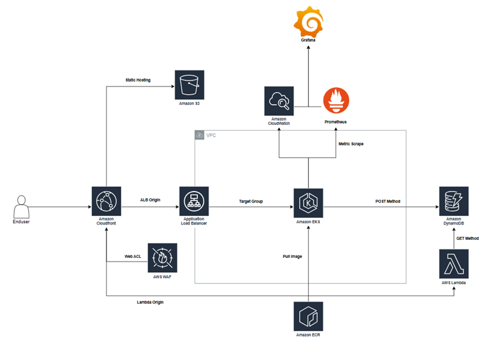
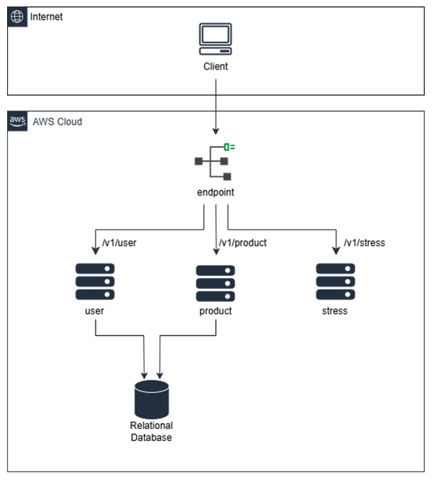

내 기기
폰·노트북에서 요청을 보냅니다. 기기는 화면을 띄우는 창구 역할만 합니다.
공주마이스터고등학교 · 클라우드컴퓨팅 전공심화동아리
AWS로 실제 서비스를 설계하고 배포합니다. 그 실력으로 전국기능경기대회 클라우드컴퓨팅 직종에 나갑니다.
목차
클라우드란
프로그램을 돌리는 진짜 계산은 내 기기가 아니라 멀리 있는 거대한 데이터센터가 합니다. 그걸 인터넷으로 빌려 쓰는 게 클라우드입니다.
폰·노트북에서 요청을 보냅니다. 기기는 화면을 띄우는 창구 역할만 합니다.
요청이 광케이블을 타고 수천 km 떨어진 곳까지 순식간에 전달됩니다.
Amazon·Google·Microsoft의 서버가 계산을 처리하고 결과만 돌려보냅니다.
쉽게 말하면
회사마다 서버를 사서 설치하고, 고장·전기·보안까지 전부 떠안았습니다. 비용과 시간이 많이 들었습니다.
전기 콘센트처럼 필요한 만큼 꽂아 쓰고, 쓴 만큼만 냅니다. 설치가 아니라 설정이면 끝이고, 바로 켜집니다.
넷플릭스, 배달 앱, 온라인 게임, ChatGPT까지 — 매일 쓰는 서비스가 전부 클라우드 위에서 돌아갑니다.
전국기능경기대회
전국기능경기대회는 전국의 특성화고·마이스터고 학생이 직종별 실무 능력을 겨루는 대회입니다. 클라우드컴퓨팅 직종은 AWS로 제한 시간 안에 요구받은 시스템을 설계·구축·배포합니다.
시·도 단위 예선. 여기서 상위 입상해야 전국으로 갑니다.
전국의 각 지역 대표가 모여 겨룹니다. 메달이 걸리는 본무대.
국가대표로 세계와 겨루는 최종 무대.
기능반
기능반은 이 대회를 목표로 집중 훈련하는 반입니다. 실제 대회 과제를 반복해서 풀며, 설계부터 배포와 장애 대응까지 실무 그대로 연습합니다.
개념만 배우는 게 아니라, 매번 실제 시스템을 처음부터 끝까지 만들어 봅니다.
현업에서 쓰는 AWS 서비스와 도구를 그대로 다룹니다. 이력서에 적을 포트폴리오가 쌓입니다.
상금, 대기업 특별채용, 국제대회 출전까지. 노력한 만큼 분명한 결과로 돌아옵니다.
우리가 푸는 과제
대회 과제는 실서비스 수준의 클라우드 시스템을 시간 안에 구축하는 일입니다. 실제 과제 세 가지를 소개합니다.

사용자 요청이 CloudFront와 보안 방화벽(WAF)을 거쳐 들어오면, 로드밸런서가 쿠버네티스(EKS)로 트래픽을 분산합니다. 데이터는 DynamoDB에 저장하고, Lambda·S3를 연동하며, Prometheus·Grafana로 상태를 실시간 모니터링합니다. 보안·확장·관측을 모두 갖춘 실서비스 구조를 시간 안에 완성합니다.
성격이 전혀 다른 4개의 클라우드 시스템을, 각각 다른 AWS 리전에서 제한 시간 안에 완성하는 종합 과제입니다.
접속한 기기가 휴대폰이면 작은 이미지, PC면 큰 이미지를 자동으로 골라 보여줍니다. 전 세계에 퍼진 CloudFront 캐시로 빠르게 전달하고, 기기를 감지해 이미지 크기를 실시간으로 바꿉니다.
회사 자체 로그인 서버를 직접 세워, 한 번 로그인하면 AWS에 바로 들어가게(SSO) 연결합니다. 개발팀·인프라팀 등 소속에 따라 할 수 있는 작업 권한을 다르게 부여합니다.
여러 서버에서 쏟아지는 로그를 한곳에 모아, 대시보드에서 에러·경고를 색깔 그래프로 한눈에 봅니다. 쿠버네티스(EKS) 위에서 수집→가공→저장→시각화 파이프라인을 만듭니다.
주문 파일이 올라오면 사람 손 없이 검증 → 결제 → 재고 차감 → 기록까지 자동으로 처리됩니다. 여러 주문을 동시에 병렬 처리하고, 실패하면 자동으로 재시도합니다.

하나의 엔드포인트에서 /v1/user, /v1/product,
/v1/stress로 요청을 나눠 처리합니다. user·product 데이터는 관계형 데이터베이스(RDS)에 저장하고,
부하 테스트(stress)까지 다룹니다. 백엔드 API의 기본기를 그대로 담은 과제입니다.
이 외에도 여러 유형의 과제를 반복해서 훈련합니다.
진로
지금 전 세계가 사람을 구하는 직군들입니다.
커리큘럼
수상 · 혜택
전국기능경기대회 입상 시 받는 혜택입니다.
상금
상금
상금
입상하면 삼성전자 특별채용 기회가 주어집니다. 졸업과 동시에 대기업으로.
금·은메달은 국가대표 선발 대상. 태극마크를 달고 세계 무대에 설 수 있습니다.